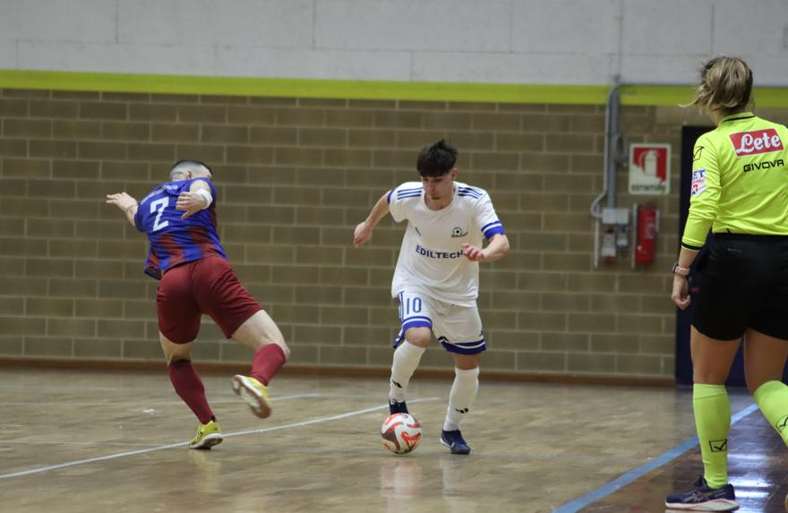

Primo tempo tirato (3 pali per i locali), poi il vantaggio di Genna poco prima della sirena. Ripresa dove vengono fuori qualità e mentalità dei seggiolai
Prova di maturità del Manzano che regola per 5-0 l’ostico Aquileia. Primo tempo dove i seggiolai bersagliano la porta dell’ottimo Morassi. Locali comunque pericolosi con ben 3 legni colpiti. La squadra di Asquini sfrutta spesso il portiere di movimento e il Manzano tiene un’ottima organizzazione difensiva. A meno di un minuto dall’intervallo, Genna, il più pericoloso dei suoi, recupera palla e sblocca la gara. Nella ripresa l’Aquileia sfiora il pari a freddo (altro palo), poi capitola sotto i colpi di un Manzano freddo e attento. Buona prova per Iurlaro e Lorenzo De Giorgio, con rispettivamente 2 gol e 2 assist, in difesa altro clean sheet per Pozzatello.
PRIMO TEMPO – Avvio in controllo da parte del Manzano. Genna cerca subito la porta da fuori, Morassi è reattivo con la palla che resta lì, De Bernardo arriva sul tap-in ma alza una palombella che colpisce la traversa, poi di nuovo Morassi a far sua la sfera.
Leonardo De Giorgio indovina un gran diagonale per Genna che viene stoppato dall’uscita di Morassi. Sul corner seguente ancora De Giorgio, provvidenziale una deviazione.
Si vede l’Aquileia sull’altro fronte, anche qui è decisiva una deviazione che manda sul palo il tiro di Simonic.
Manzano proiettato in avanti: Genna metta una bella palla in mezzo per De Bernardo che è in ritardo. La squadra di Asquini si appoggia a una ripartenza in campo aperto di Simonic, ottimo Pozzatello che esce fino a centrocampo e anticipa l’ex compagno pronto alla fuga.
L’Aquileia prende coraggio e al 5’ colpisce un palo con un rasoterra di Grillo. L’occasione più ghiotta capita a Del Bello che ruba una palla velenosa dal limite e a tu per tu con Pozzatello prende la traversa piena.
Il Manzano ha bersagliato la porta di Morassi per buona parte della prima frazione, ma anche l’Aquileia ha confezionato situazioni pericolose nitide, colpendo 3 legni. In una di questa l’ex Fabbro è bravo a recuperare una palla sul lato, il suo invito però viene vanificato dal ritardo di Castillo in area.
Finale di primo tempo con il Manzano che forza in avanti: decisivo Morassi che toglie dall’angolino basso le stilettate di Genna e Iurlaro. Ancora Genna che sfiora il gol dalla distanza, provvidenziale la deviazione di un difensore locale.
I padroni di casa si appoggiano spesso al portiere di movimento per guadagnare metri e possesso palla. In una di queste situazioni, a 58 secondi dalla fine, Genna è bravo ad anticipare l’uomo e a battere Morassi, che non torna tra i pali in tempo. Manzano in vantaggio poco prima del gong.
SECONDO TEMPO – Ripresa che inizia con un’occasionissima per l’Aquileia: Simonic viene pescato a tu per tu con Pozzatello e spara sulla traversa, colpendo il 4° legno per i padroni di casa. La squadra di Asquini è ancora pericolosa quando, con il portiere di movimento, Morassi smarca Fabbro di prima in mezzo, Polidori salva i compagni deviando il suo tiro ravvicinato in area.
La partita è tirata ma il Manzano ha la qualità e la personalità per controllare la gara. Leonardo De Giorgio ci prova da fuori, aiutato da una deviazione, ma il riflesso di Morassi con la mano di richiamo preserva l’1-0.
Bisogna aspettare la metà del secondo tempo per vedere il raddoppio: Lorenzo De Giorgio riceve su corner, tiene palla e scarica alle spalle per l’inserimento di Iurlaro che raddoppia: 2-0.
Manzano in palla: Klejdi Zharri viene pescato sul primo palo ma non inquadra la porta, poi ancora Lorenzo De Giorgio che affina l’intesa con Iurlaro, questa volta il numero 10 manda sul fondo.
Sempre De Giorgio ispiratissimo che allarga per Iurlaro, il quale batte Morassi con un rasoterra potente: 3-0, doppietta di Iurlaro e secondo assist di Lorenzo De Giorgio.
Aquileia prova a mettere la testa fuori, ma Castillo manda alto il suggerimento di Morassi, divorando un gol a porta quasi vuota.
I locali forzano la manovra con il 5° uomo, Tancos intercetta e cerca la porta in due occasioni: alla prima manda sul fondo, alla seconda inquadra il bersaglio dalla distanza e cala il poker.
A 3’ dalla fine sempre Tancos trova Fusco nel cuore dell’area con un rasoterra potente, il pivot si gira e mette il sigilllo sul definitivo 5-0.
Il Manzano tiene la testa della classifica e risponde al convincente 7-1 del Palmanova sull’Udine City. Nel mentre aumenta il distacco sul terzo posto (ora staccato di 10 punti), visto il pareggio dell’Aquila Reale contro il Martignacco. Sabato prossimo, a Manzano, si gioca contro la Clark ultima in classifica.